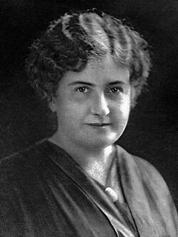
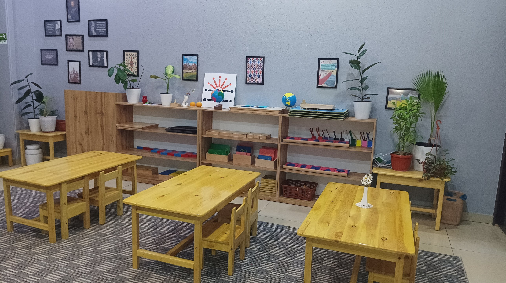
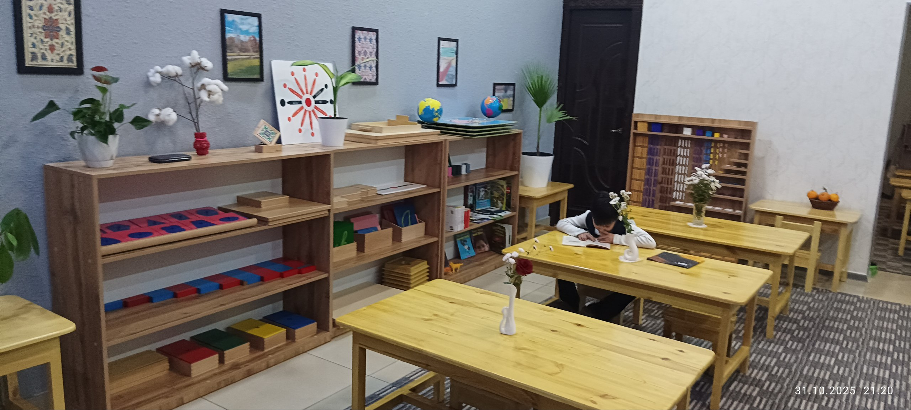

Montessori: bolaga ishonadigan ta'lim tizimi
Bir asrdan ortiq vaqt oldin Rimdagi kichkina bolalar uyida boshlangan bu usul bugun butun dunyodagi minglab bog'cha va maktablarda qo'llaniladi. Quyida Montessori qanday paydo bo'lgani, uning asosiy tamoyillari, bu tizimda tarbiyalangan mashhur insonlar va uni qo'llab-quvvatlagan buyuk shaxslar haqida o'qiysiz.
Pushti minora, globus va oltin munchoqlar — klassik Montessori materiallari.

Maria Montessori kim edi?
Maria Montessori (1870–1952)
Maria Montessori (1870–1952) — italyan shifokori, pedagog va olim. U Italiyada tibbiyot bo'yicha ta'lim olgan ilk ayollardan biri bo'lgan. Shifokor sifatida rivojlanishida qiyinchiligi bor bolalar bilan ishlab, bolalar to'g'ri tayyorlangan muhitda va qo'l bilan ishlaydigan materiallar orqali hayratlanarli tezlikda o'rganishini kuzatgan.
Uning usuli taxminlarga emas, bolalarni ilmiy kuzatishga asoslangan. Shuning uchun Montessori bugun ham «bolaga ergashing» degan tamoyil bilan tanilgan: kattalar bolaga nimani qachon o'rganishni majburlamaydi, balki uning qiziqishini kuzatib, mos muhit yaratadi.
-
1870
Chiaravalle shahrida tug'ildi
31-avgust kuni Italiyaning Ankona viloyatida dunyoga keldi.
-
1896
Rim universitetini shifokor sifatida tamomladi
O'sha davrda ayollar uchun deyarli yopiq bo'lgan tibbiyot sohasida diplom oldi va bolalar bilan ishlay boshladi.
-
1907, 6-yanvar
Birinchi «Casa dei Bambini» — «Bolalar uyi»
Rimning San-Lorenso mahallasida ishchi oilalarining bolalari uchun ilk Montessori bog'chasi ochildi. Usul aynan shu yerda tug'ildi.
-
1909–1913
Kitob va xalqaro shuhrat
Usul haqidagi kitobi ko'plab tillarga tarjima qilindi; 1913-yilda AQShda ma'ruzalar o'qidi va Amerikada Montessori jamiyati tuzildi.
-
1929
Xalqaro Montessori assotsiatsiyasi (AMI)
Usulning sifatini saqlash va o'qituvchilar tayyorlash uchun xalqaro tashkilot tuzildi. AMI bugun ham Amsterdamda faoliyat yuritadi.
-
1939–1946
Hindistondagi yillar
Ikkinchi jahon urushi yillarida Hindistonda yashab, minglab o'qituvchilarni tayyorladi va «kosmik ta'lim» g'oyasini rivojlantirdi.
-
1949–1952
Tinchlik uchun Nobel mukofotiga nomzod
Uch yil ketma-ket nomzod qilib ko'rsatildi. 1952-yil 6-mayda Niderlandiyaning Nordvayk shahrida vafot etdi.
-
2025
Farg'onada — Fitrat Montessori
Shu an'ana asosida Farg'ona shahrida Fitrat Montessori bog'chasi ochildi.
Montessori oddiy bog'chadan nimasi bilan farq qiladi?
Bolaga ergashish
Tarbiyachi bolani kuzatadi va uning qiziqishiga mos mashg'ulot taklif qiladi. Hamma bir vaqtda bir xil ishni qilishga majbur emas.
Tayyorlangan muhit
Bola bo'yiga mos javonlar, tartibli zonalar va har bir materialning o'z joyi bor. Bola kerakli narsani o'zi olib, o'zi joyiga qo'yadi.
Qo'l orqali o'rganish
Sanoq oltin munchoqlar bilan, harflar qo'pol qog'ozdan yasalgan harflar bilan o'rganiladi — abstrakt tushuncha avval qo'lda his qilinadi.
Chegaralangan erkinlik
Bola mashg'ulotni o'zi tanlaydi, lekin aniq qoidalar doirasida: boshqalarga xalaqit bermaslik va materialni ehtiyot qilish.
Aralash yoshdagi guruhlar
Kattaroq bolalar kichiklarga ko'rsatadi, kichiklar esa kattalardan o'rganadi. Bu g'amxo'rlik va yetakchilikni tarbiyalaydi.
Bolaga hurmat
Jazo va mukofot o'rniga ichki motivatsiya: bola ishni «baho uchun» emas, o'zi qiziqqani uchun qiladi.


Bu tizimda tarbiyalangan mashhur insonlar
Ularning ko'pchiligi bolaligida Montessori bog'cha yoki maktabiga borgan va keyinchalik mustaqil fikrlash, qiziquvchanlik va o'z ishiga berilib ketish odatini aynan shu ta'lim bilan bog'lagan.
Google asoschisi Larri Peyj bir suhbatda o'zining muvaffaqiyatini Montessori tarbiyasi bilan bog'lagan: uning so'zlariga ko'ra, bu ta'lim ularni o'z-o'zini rag'batlantirishga, dunyoda nima bo'layotganini savol ostiga olishga va ishlarni biroz boshqacha qilishga o'rgatgan.
Montessorini qo'llab-quvvatlagan buyuk shaxslar
Ixtirochilar, olimlar va davlat arboblari bu usulni o'z davrida yuqori baholagan, uning tarqalishiga yordam bergan.
Montessori muhitini o'z ko'zingiz bilan ko'ring
Fitrat Montessori bog'chasida aynan shu tamoyillar asosida ishlaymiz. Tanishuv ekskursiyasiga yoziling — sinfxona, materiallar va kun tartibi bilan tanishtiramiz.